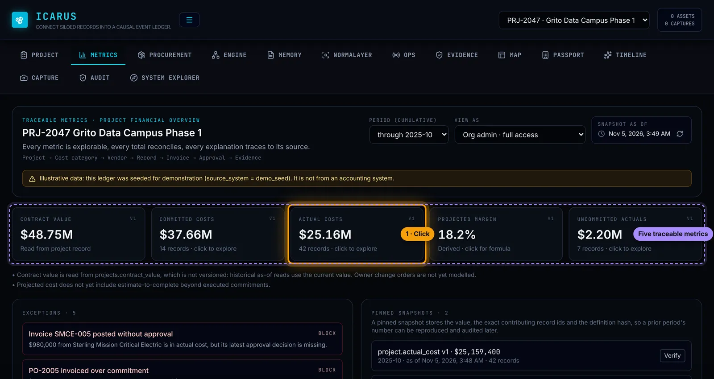
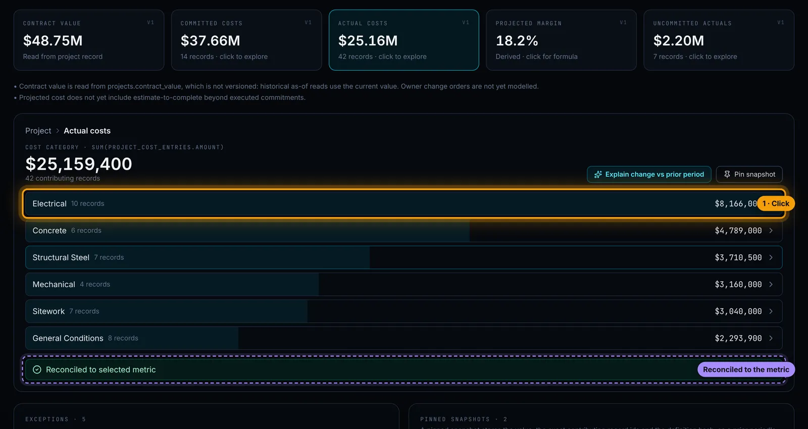
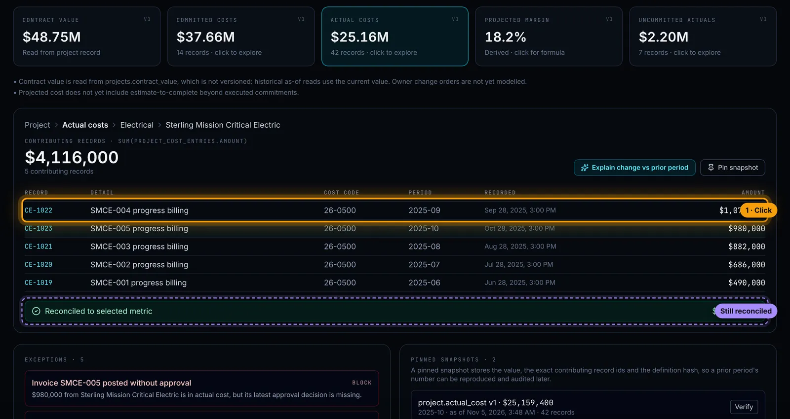
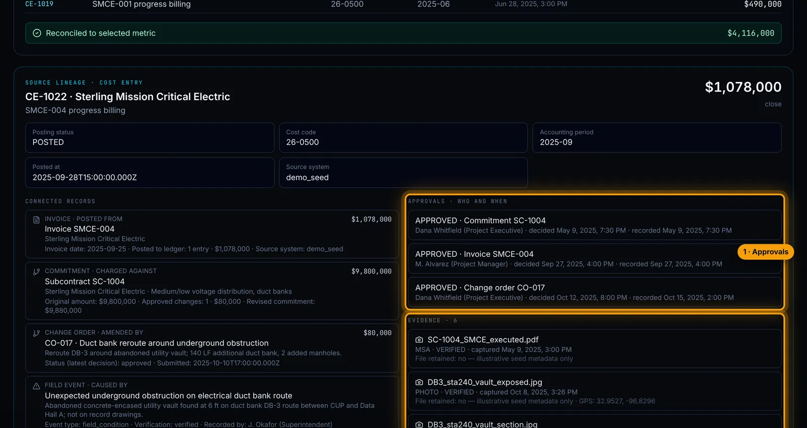
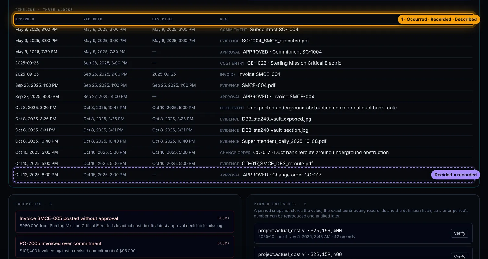
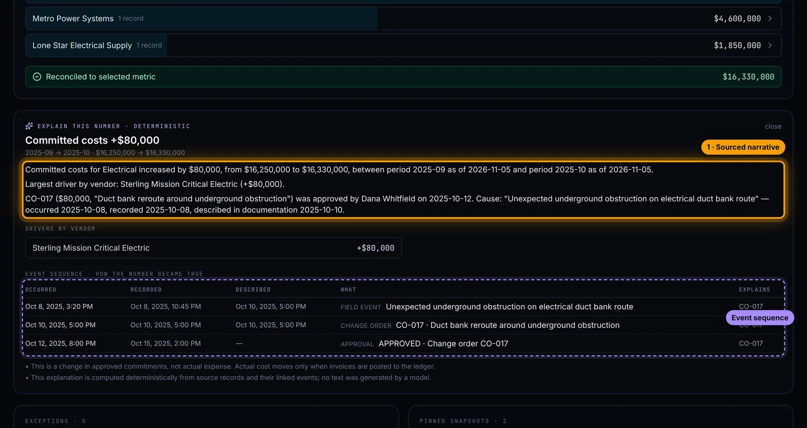
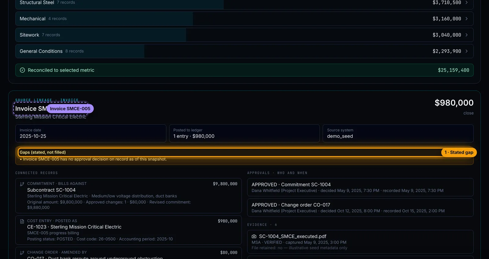
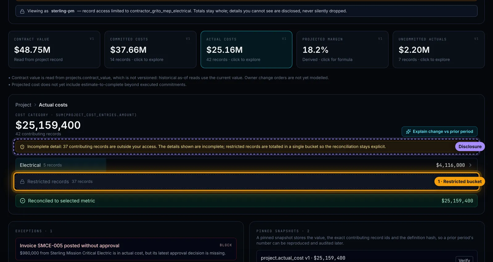
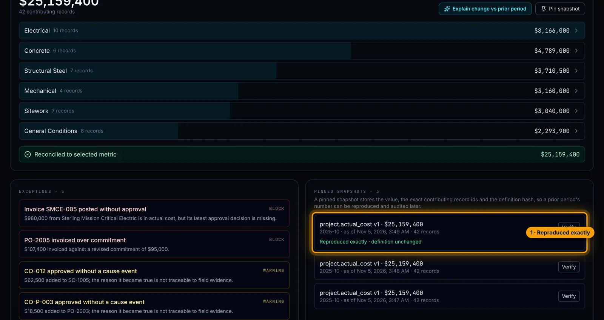

BUILT & BUILDING / 01
Traceable Metrics
A dashboard where every number opens up. Click a cost and keep going: category, vendor, the ledger entries, the invoice, the change order, the field event that started it, and who signed off.
WHY IT MATTERS
- The question is always "where did this come from?" Owners, lenders and auditors ask it. Today the answer is a person, a spreadsheet and an afternoon.
- The number and the proof live in the same place. Every level reconciles to the one above it, so the detail can't quietly drift from the total.
- Explanations come from records, not prose. When a number moves, the system shows what moved it. No AI-written summary to second-guess.
- Missing is a state, not a blank. If an approval doesn't exist, the screen says so. That's usually the most useful thing on it.
The walkthrough
ILLUSTRATIVE DEMO DATA Projects, vendors, people and amounts are invented, and every screen says so. These are captures of the working software, not mock-ups. Orange outlines mark what to look at.










WHAT THIS PROVES
Traceable records: every reported number reconciles to its source records, approvals, documents and timing.
Built
- The drill-through, lineage, three clocks, explain-change, exceptions, restricted view and snapshots all run in the real software.
- Captured on an illustrative construction project, against a test data store.
Not yet
- Not yet connected to a live accounting or project-management system.
- Runs on seeded demonstration data, not a customer's books.
Got a number nobody can explain? Let's trace it.
ASK FOR A WALKTHROUGHThirty minutes, on a screen share or at your office in Dallas.
Or write to bluedottechnology [at] outlook [dot] com